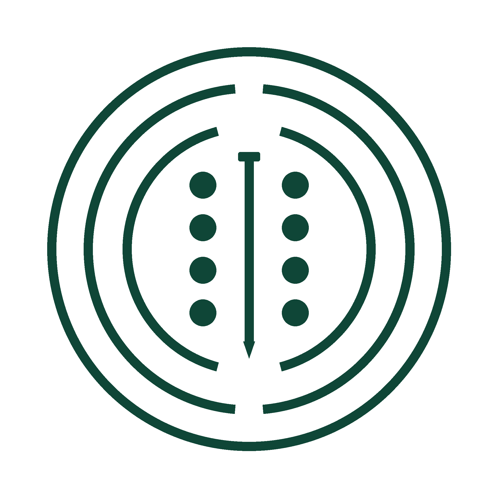

1需求背景
当前痛点
- 1 数据采集效率低。 患者用纸质表格记录，研究人员需要手动录入，耗时耗力且容易出错。
- 2 随访依从性不佳。 患者容易忘记填写，到了随访时间点需要研究人员逐一提醒，沟通成本高。
- 3 量表评分需要手动计算。 每份量表需要人工算分，不仅慢，还容易算错，影响研究数据准确性。
- 4 中老年患者操作困难。 现有的一些健康app操作复杂，目标用户（中老年男性）难以坚持使用。
2需求目标
核心目标
3目标用户与使用场景
目标用户画像
- 年龄：主要为50-80岁的中老年男性
- 健康状况：刚做完前列腺相关手术，处于术后康复期
- 数字能力：能使用智能手机（打电话、微信），但操作不太熟练
- 使用意愿：愿意记录自己的康复情况，但怕麻烦、怕复杂
- 痛点：记不住随访时间，纸质记录容易丢，不知道自己恢复得怎么样
核心使用场景
| 场景 | 用户行为 | 产品价值 |
|---|---|---|
| 日常记录 | 患者每次排尿后，打开app点几下，记录尿量和有无症状，耗时不超过30秒 | 简单快捷，不增加负担，形成记录习惯 |
| 随访问卷 | 收到app的随访提醒，点击进入，按步骤回答选择题，完成后看到自己的评分 | 自动提醒不会忘，选择题好操作，当场看到结果有反馈 |
| 查看历史 | 想知道自己最近恢复情况时，打开历史记录看看趋势 | 直观了解康复进展，增加信心 |
| 数据导出 | 复查时，患者把数据导出发给医生，或者直接给医生看手机 | 省去手动整理，数据完整清晰 |
4功能需求详情
第一版包含6个功能模块：账号注册登录、日常排尿记录、量表评估、随访提醒、历史记录、数据导出。 下面逐一说明每个模块的具体功能和交互逻辑。
4.1 账号注册登录
患者需要注册账号来保存自己的数据。系统自动生成唯一的患者编号， 用于和研究团队的病例对应。所有数据存在本地，不联网也能正常使用。

功能说明
- 注册：患者输入用户名、昵称、密码即可注册。系统自动生成患者编号，格式为 PR + 年份 + 4位序号（如 PR20260001）。注册成功后设置随访提醒。
- 登录：输入用户名和密码登录。登录状态保存在本地，下次打开自动进入主页。
- 退出登录：在"我的"页面可以退出登录，清除当前账号的登录状态。
字段规则
| 字段 | 类型 | 必填 | 规则 |
|---|---|---|---|
| 用户名 | 文本 | 是 | 2-30个字符，支持手机号或自定义名称，不可重复 |
| 昵称 | 文本 | 是 | 2-20个字符，显示在首页欢迎语中 |
| 密码 | 文本 | 是 | 6-20个字符，本地加密存储 |
| 患者编号 | 文本 | 系统生成 | PR + 年份 + 4位序号，全局唯一 |
4.2 日常排尿记录
这是患者使用最频繁的功能。每次排尿后点几下就能完成记录， 尿量用"少量/中量/大量"简单选项，症状用勾选方式，降低操作负担。
少量
中量
大量
页面结构
记录页面从上到下依次为：记录时间、尿量选择、症状勾选、备注输入、保存按钮。 默认记录时间为当前时间，患者可以点击修改。尿量默认选中"中量"，减少操作步骤。
业务逻辑
- 快速记录：默认时间为当前、尿量为中量，患者如果没有特殊症状，只需要点一下保存按钮就能完成记录。
- 时间修改：点击时间区域弹出日期和时间选择器，可以补记之前的排尿记录。
- 尿量三档：少量、中量、大量，用视觉化图标辅助理解，患者凭感觉选择即可。
- 症状多选：6个常见症状复选框，患者有就勾，没有就不用动。默认全不选。
- 编辑记录：在历史记录里点击某条记录可以进入编辑页面，修改后保存。
数据字段
| 字段 | 类型 | 说明 |
|---|---|---|
| 记录时间 | 时间戳 | 精确到分钟，默认当前时间，可修改 |
| 尿量等级 | 整型 | 0=少量，1=中量，2=大量 |
| 漏尿 | 布尔 | 是否有漏尿 |
| 尿急 | 布尔 | 是否有尿急 |
| 尿痛 | 布尔 | 是否有尿痛 |
| 尿线变细 | 布尔 | 是否尿线变细 |
| 间断排尿 | 布尔 | 是否间断排尿 |
| 夜间排尿 | 布尔 | 本次排尿是否发生在夜间 |
| 备注 | 文本 | 选填，最多200字 |
4.3 量表评估
包含三个标准化量表：ICIQ-SF（尿失禁问卷）、IPSS（前列腺症状评分）、QoL（生活质量）。 全部用选择题形式，用通俗话语表述，患者容易理解。 填完后系统自动计算总分，并展示结果。
量表结构
| 量表 | 题目数 | 分值范围 | 评分说明 |
|---|---|---|---|
| ICIQ-SF 尿失禁简短问卷 |
3道计分题 + 1道记录题 | 0-21分 | Q1（0-5）+ Q2（0-3）+ Q3（0-10）= 总分。分数越高，尿失禁越严重。 |
| IPSS 国际前列腺症状评分 |
7道题 | 0-35分 | 7道题各0-5分相加。≤7分为轻度，8-19分为中度，≥20分为重度。 |
| QoL 生活质量评分 |
1道题 | 0-6分 | 0分=非常高兴，6分=很糟糕。分数越高，对生活质量影响越大。 |
交互流程
- 分步填写：先选随访时间点（T0/T1/T2/T3），然后依次填ICIQ-SF、IPSS、QoL，最后展示结果。
- 上一步/下一步：每部分填完点"下一步"进入下一部分，也可以点"上一步"返回修改。
- 进度指示：顶部有步骤圆点，让患者知道自己填到哪一步了。
- 必填校验：每一部分的题目必须全部选完才能进入下一步，未完成时提示"请完成所有问题"。
- 结果展示：提交后展示三个量表的得分，IPSS额外显示严重程度（轻度/中度/重度）。
- 原始记录保留：数据库中同时保存每道题的原始答案和计算后的总分，便于后续核对。
题目表述原则
4.4 随访提醒
患者注册后，系统自动设置四个时间点的随访提醒。到了时间，app会推送通知， 患者点击通知直接进入量表填写页面，提高随访完成率。
| 时间点 | 触发时间 | 提醒内容 |
|---|---|---|
| T0 基线 | 注册后第2天早上9点 | "请完成基线评估，填写随访问卷" |
| T1 1个月 | 注册后1个月的当天早上9点 | "1个月随访时间到了，请填写随访问卷" |
| T2 3个月 | 注册后3个月的当天早上9点 | "3个月随访时间到了，请填写随访问卷" |
| T3 6个月 | 注册后6个月的当天早上9点 | "6个月随访时间到了，请填写随访问卷" |
实现逻辑
- 注册即设置：患者注册成功时，以注册日期为基准，自动计算并设置4个时间点的提醒。
- 本地通知：使用系统闹钟（AlarmManager）实现，不依赖网络，app关闭也能收到。
- 点击跳转：点击通知直接打开app并跳转到量表填写页面。
- 时间已过则跳过：如果某个时间点已经过了（比如患者注册较晚），就不再设置那个时间点的提醒。
4.5 历史记录
患者可以查看自己之前的所有记录，分为"排尿记录"和"量表评估"两个标签页。 点击排尿记录可以编辑修改。
排尿记录标签页
- 按时间倒序排列，最新的在最上面
- 每条显示：时间、尿量、症状
- 点击某条记录进入编辑页面
- 空状态显示"暂无记录"
量表评估标签页
- 按时间倒序排列
- 每条显示：时间点、日期、三个量表的得分
- 点击可查看详情（后续版本可加）
- 空状态显示"暂无记录"
4.6 数据导出
患者可以将自己的数据导出为Excel文件，通过微信、QQ等方式发送给研究团队。 这是第一版数据汇总的主要方式（经费有限，暂不做服务器后台）。
导出范围
- 全部数据：导出所有排尿记录和量表评估
- 最近30天：只导出最近30天的排尿记录和期间的量表
- 最近90天：只导出最近90天的排尿记录和期间的量表
导出文件结构
Excel文件包含3个工作表（Sheet）：
| 工作表 | 内容 | 字段 |
|---|---|---|
| 患者信息 | 患者基本信息 | 患者编号、昵称、用户名、注册日期 |
| 排尿记录 | 所有排尿记录明细 | 序号、记录时间、尿量、漏尿、尿急、尿痛、尿线变细、间断排尿、夜间排尿、备注 |
| 量表评估 | 所有量表评估记录 | 时间点、评估日期、ICIQ各题得分+总分、IPSS各题得分+总分、QoL评分、尿垫数、并发症、备注 |
文件存储
- 文件保存在手机的"文档"文件夹中
- 文件名格式：康复数据_患者编号_时间戳.xlsx
- 导出成功后提示文件路径，方便患者查找
4.7 主页与整体导航
主页是患者进入app后的第一个页面，一目了然地展示核心信息和功能入口。 采用卡片式布局，大图标+大文字，中老年人一眼就能找到要操作的功能。
主页结构
- 顶部欢迎区：显示"您好，XX"和患者编号
- 今日统计卡片：醒目显示今日排尿次数，蓝色背景突出
- 四个功能入口：快速记录、填写量表、查看记录、导出数据，2×2网格排列，大图标+大文字
- 底部导航栏：首页、记录、历史、我的四个Tab（第一版以主页卡片导航为主，底部Tab为辅助）
5非功能需求
5.1 适老化设计
5.2 数据安全与隐私
- 本地存储：所有数据只保存在用户手机本地，不上传服务器，保护隐私。
- 密码加密：用户密码在本地加密存储，不保存明文。
- 数据隔离：每个账号的数据独立存储，互不影响。
5.3 离线可用
所有核心功能（记录、量表、查看历史、导出数据）都不依赖网络， 没有wifi和流量的情况下完全可用。只有推送通知需要系统权限，但不依赖app运行。
5.4 兼容性
- 最低系统版本：Android 7.0（API 24），覆盖绝大多数在用的安卓手机
- 屏幕适配：支持各种尺寸的安卓手机屏幕，从小屏到全面屏
5.5 可扩展性
6第一版范围界定
✓ 第一版做的
- ✓ 本地账号注册登录，自动生成患者编号
- ✓ 日常排尿记录（时间、尿量、症状、备注）
- ✓ 三个量表填写（ICIQ-SF、IPSS、QoL）及自动评分
- ✓ 四个随访时间点自动提醒
- ✓ 历史记录查看（排尿记录 + 量表记录）
- ✓ 数据导出Excel文件
- ✓ 适老化界面设计（大字、大按钮、高对比）
- ✓ 数据本地存储，完全离线可用
✗ 第一版不做的
- ✗ 微信小程序版本（后续再做）
- ✗ 服务器后台和云端数据上传
- ✗ 医生/研究人员管理后台
- ✗ 基线信息中的专业医疗内容（手术方式、合并症等，由医生端记录）
- ✗ 埋线干预记录（医生操作内容）
- ✗ 患者联系信息管理（电话、家属电话等，由研究团队管理）
- ✗ 数据统计图表和趋势分析（第二版可加）
- ✗ 密码找回、修改个人信息等账号管理功能